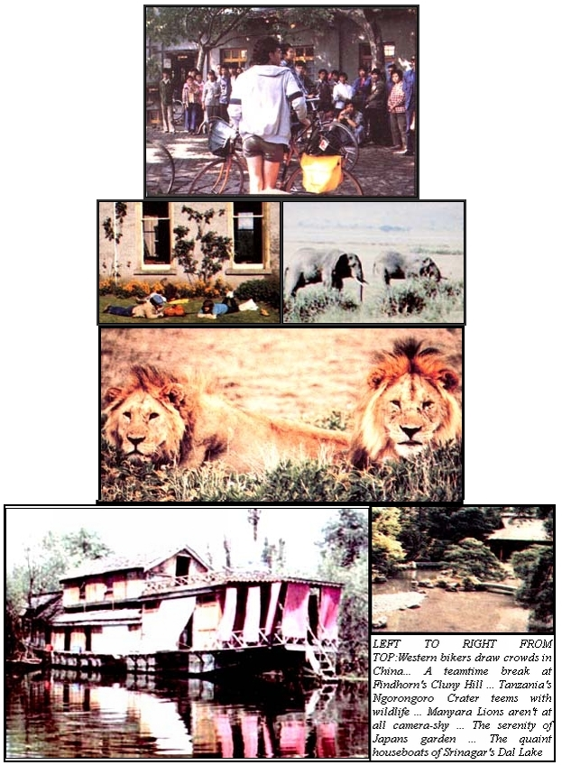

Happiness is to "travel into a very far country, and even out of ourselves".
(Thomas Browne)
We're very excited about the tours MOTHER will be offering for the remainder of this year and during 1984. Just look at this lineup: the horticultural practices of Japan ... Scotland's New Age lifestyles . . . alternative energy in Australia ... the wildlife of Rwanda and Tanzania ... biking Inner Mongolia in China ... and trekking Ladakh's Tibetan Plateau! And of course, our travelers will be able to share these incredible experiences with other MOTHER readers, who are - as we've discovered over the years -fabulous companions!
Because of space limitations, we can give you only the following brief outlines of our upcoming adventures, but you can write to us for more details.
As we went to press, there were only a few openings left on our springtime horticultural study tour of Japan (April 21 to May 12, 1983) with Dr. John L. Creech, former head of the U.S. Arboretum in Washington, D.C. and one of the Western world's top experts on Japanese gardening practices. However, there's always the possibility of a last-minute cancellation, so if you'd like to visit some of the Orient's most exquisite gardens - at the peak of their beauty - call us, at 704/693-0211, to find out whether any space is available. (The all-inclusive cost, from San Francisco, is $3,795 ... which would have to be paid right away.)
Last year's visit to the New Age Scottish community of Findhorn, and the nearby island of Erraid (which a few members caretake and farm), was so delightful that we decided to repeat the experience ... from June I to 23, 1983.
This time, we'll fly from New York to Edinburgh, where we'll spend two days sightseeing and recovering from jet lag before proceeding by train to Findhorn, on Scotland's northeast coast. There, we'll participate in an "Experience Week" . . . working and playing with the community's creative citizens, as we learn from their fresh approaches to old problems.
Next, we'll travel across Scotland, past Loch Ness, for a week's unstructured stay on Erraid (it's located in the Inner Hebrides). You'll have plenty of time to explore this rugged, splendid little island (which served as a setting for some of Robert Louis Stevenson's most delightful tales) ... to help the fine folks who live there with the farming and fishing chores (if you feel so moved) ... and to visit the neighboring island of Iona, from which Christianity spread throughout Britain and northern Europe.
When we leave Erraid, we'll travel down the length of Great Britain to Glastonbury, sightseeing along the way. Then, while staying in Glastonbury (the legendary burial place of King Arthur) we'll visit Stonehenge, Avebury, and Cadbury Castle ... and attend a Midsummer Eve celebration. Finally, we'll overnight in London before flying home.
The price, which includes round-trip airfare from New York and all other expenses (except for a few meals en route and in Glastonbury), is only $1,790, and a $200 deposit will reserve your place for this fine adventure of the mind, body, and spirit.
We're pleased to be able to offer a ten-day trip to the International Solar Energy Society Congress in Perth, Australia (August 9 to 19, 1983) for as little as $1,395, including airfare from San Francisco and university housing, but excluding the convention registration fee (it will run $150 for ISES members, $170 for nonmembers, $50 for student members, $60 for student nonmembers, and $50 for accompanying guests).
This major energy forum will offer a wide range of technical sessions, seminars, workshops, opportunities for both formal and informal discussion with leaders in the field, and one of the most exciting exhibits ever held in the Southern Hemisphere. In addition, the tour offers optional stopovers in Auckland, Honolulu, and Tahiti ... and even a circle tour of the East, which includes visits to alternative-energy sites in Thailand, Hong Kong, and Japan. (Write to find out about the costs of these various tour options.) A $200 deposit is required with your registration.
When we decided to go on an African camping safari (January 6 to 24, 1984) to search for the rare mountain gorillas of Rwanda and to view Tanzania's other spectacular wildlife, we knew immediately that we could find no better tour leaders than our Ecoscience columnists and renowned biologists, Anne and Paul Ehrlich, and their associates John and Cheryl Holdren.
There is no more striking natural wonder in East Africa than its wildlife, and this three-week journey will let us see the best that the area has to offer: the Lake Manyara region, where the elephants - many of which sport incredibly long tusks - are some of the oldest on the continent, and where lions spend the hot afternoons sprawled on the limbs of acacia trees ... the Ngorongoro Crater, whose grassy floor contains Africa's largest permanent concentration of animals ... the unmatched Serengeti Plains, where giraffes, ostriches, and zebras abound ... Lake Victoria, one of the world's most alluring inland seas ... and Rwanda's Virunga volcanoes, where we'll observe some of the earth's rarest and most interesting creatures, the mountain gorillas, mighty masters of Africa's rain forests. And, of course, this wealth of natural beauty will be enhanced by the wide range of knowledge that our tour leaders will bring to the unforgettable outdoor excursion.
The all-inclusive cost from New York is $3,380, and $300 reserves one of the limited number of spaces available.
In late May of 1984 (the exact dates are still to be set), we'll be sponsoring what is probably the most exciting bicycle tour offered anywhere ... a trip through the grasslands and steppes of China's Inner Mongolia Autonomous Region, which - of all the places recently opened in China - surely ranks among the most colorful.
The tour will begin with four days in Beijing, including bike excursions to the Great Wall and the Ming Tombs. We'll then strike out westward to the Shanxi Province and the town of Datong ... site of the spectacular Dunhuang Caves, which date back to 366 A.D. and contain the world's largest Buddhist art treasury, housing over 484,200 square feet of murals and 2,000 statues.
From there, we'll cross the border into Inner Mongolia, biking to such ancient towns as Wuchuan, Wulang-Bulang, Baotou, Xilinhot, and Hohhot. What's more, along the route we'll spend some of our nights in yurts with the local tribes.
This 28-day excursion is, however, only for the hardy ... as we bike up to 60 kilometers a day. The all-inclusive cost, from the West Coast, is $3,183 ... and a deposit of $300 is required.
From July 15 to August 7, 1984 we're planning an extraordinary visit to the incredibly spectacular land called Ladakh . . . often referred to as "the roof of the world" or "Little Tibet". Although this remote area is technically attached to northern India, its culture has always linked it with Tibet. Indeed, the language, the clothing, the architecture, and the traditions are all very similar those of Tibet (as that country was prior to the Chinese conquest and the region's predominant religion-its major guiding force over the centuries - is Tibetan Mahayana Buddhism.
This, too, is a trip only for those in very good physical condition Though we will stay over in the famous houseboats on fabled Dal Lake in Srinagar, and travel by bus for the first leg of the trip, out travelers must be able - once we start trekking - to negotiate very steep mountain trails that will climb as high as 17,500 feet! However, as we view wild rock formations, wine-red scree, deep ravines soaring Himalayan snow peaks, and the high desert punctuated brilliant green oases - and visit ancient monasteries, native home and self-sufficient villages, gaining insights into a traditional way life that has seen little change for more than a thousand years - energy expended to experience this timeless land will be more the amply rewarded.
The all-inclusive cost (except for a few meals) of this 24-day venture is $3,330, and a $300 deposit is required. To sign up for any of our trips, send your deposit - $50 of which is nonrefundable - by certified check or money order to Moth Tours, 105 Stoney Mountain Road, Hendersonville, North lina 28791.
|
 |
|
|